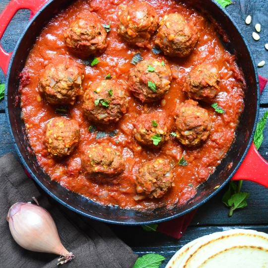

Lets make meatballs!

This meatball recipe is quick and easy and you cant go wrong with meatballs for
tea.
You will need -
For the meatballs
- 1 lb ground Lamb
- 1 garlic clove, finely chopped
- 1/2 dried mixed herbs
- 1 tbsp olive oil
For the sauce
- 1 tbsp olive oil
- 1 brown onion, finely chopped
- 1 garlic clove, finely chopped
- 500ml beef stock
- 400g chopped tomatoes
- salt and pepper
- 1 tsp mixed herbs
For the spaghetti
- Spaghetti
Method
- Heat a large saucepan over a medium heat and add the olive oil. Once hot, add the onion and cook gently without browning for 4–5 minutes, or until softened and translucent.
Add the garlic, continue to cook for 2 minutes until aromatic, then add the dried herbs, tomatoes and stock. Bring the sauce to a simmer,
reduce the heat and simmer gently while you make the meatballs.
-
For the meatballs, mix together the beef, garlic and herbs along with a decent pinch of salt and pepper. Using wet hands roll into 20 balls.
- Heat a frying pan over a medium heat and add the olive oil. Once hot, fry the meatballs on all sides until nicely coloured, being careful not to burn them.
You may need to do this in batches. Transfer to the saucepan containing the sauce.
- Continue to simmer the sauce for 10 minutes while you cook the spaghetti.
- Bring a large saucepan water to the boil, add a pinch of salt and cook the spaghetti according to the packet instructions.
Once cooked, drain and tip into the saucepan with the meatball sauce. Mix well and serve hot.